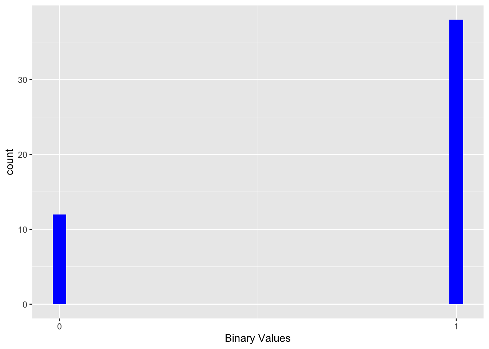
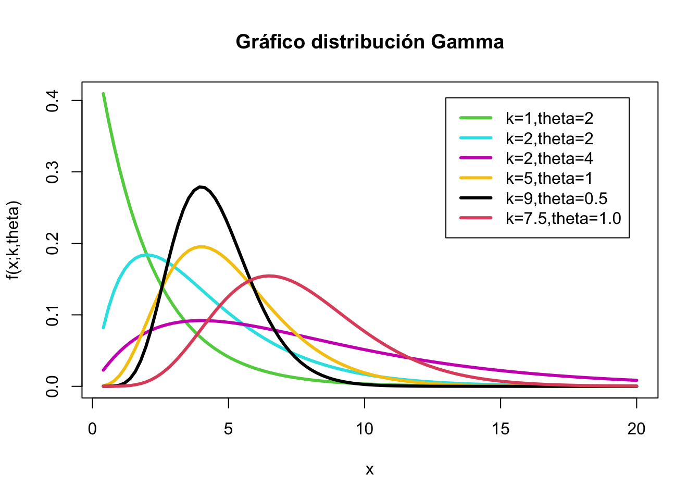
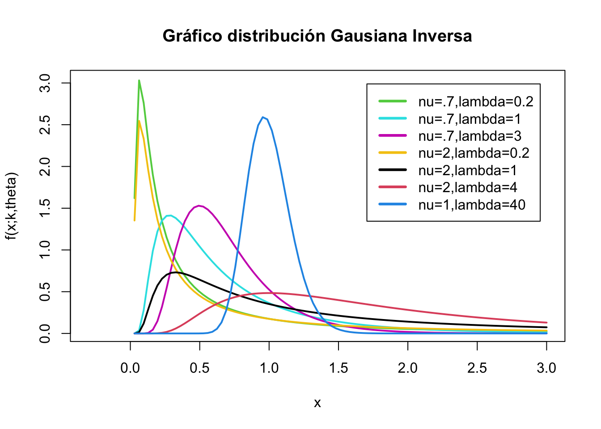
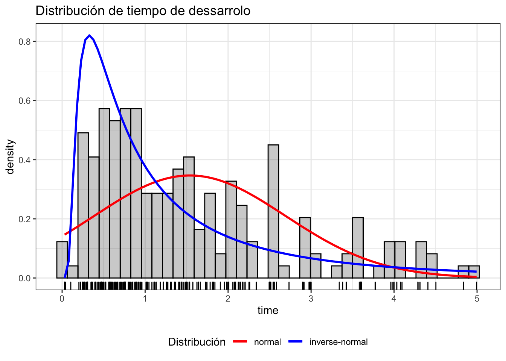
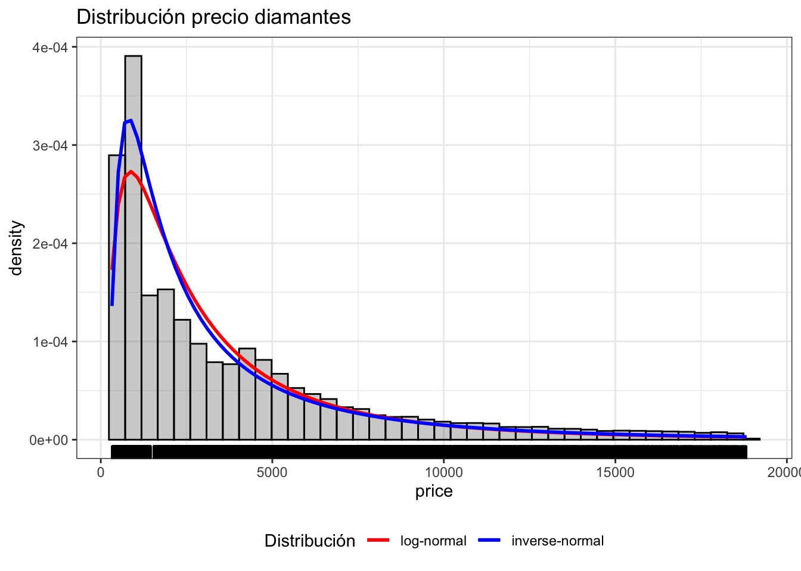

if (!require("pacman")) install.packages("pacman")
pacman::p_load(tidyverse, huxtable, wakefield, SuppDists,univariateML)
library(tidyverse)
library(huxtable)
library(wakefield)
library(SuppDists)
library(univariateML)Los modelos lineales generalizados, GLM por sus siglas en ingles, son una extensión de los modelos lineales donde la variable dependiente tiene una distribución normal. Recordamos que en una regresión lineal la variable dependiente sigue el modelo \(y_i = \beta_0 + \beta_1 x_i\), donde \(\beta_0\) es el intercepto y la \(\beta_1\) es el coeficiente, o sea la pendiente y la \(x_i\) son los valores de x’s. Uno de los supuestos es que la variación en los valores de \(\mu_i\), que son los \(y_i\) tienen una distribución normal en cada x’s y que haya homogeneidad de varianza.
\[\mu_i=\beta_0+\beta_1x_i\] Un supuesto importante es el supuesto que la variación en los \(y_i\) tienen una distribución normal y que hay homogeneidad de varianza.
\[y_i\sim N\left(\mu_i,\ \epsilon\right)\] Lo podemos visualizar con con la siguiente figura, donde los valores de y’s tienen una distribución normal y que esta distribución es homogenea a través de los valores de x’s.
Del siguiente website; https://towardsdatascience.com/generalized-linear-models-9cbf848bb8ab
El problema principal por mucho tiempo ha sido que la variable dependiente no tiene distribución normal y por consecuencia no cumplía con los supuestos de la regresión lineal. El método de linearizar la variable de respuesta fue desarrollado por Nelder y Wedderburn 1972. Puede encontrar información sobre la prueba y su evolución de GLM en https://encyclopediaofmath.org/wiki/Generalized_linear_models. Con el avance del uso de las computadoras en los años 80 terminó en ser uno de los métodos estadísticos más utilizados.
El termino GLM se refiere a un gran variedad de modelos de regresión. El supuesto en estos modelos es que la variable de respuesta \(y_i\) sigue una distribución dentro de la familia de distribuciones exponencial con un promedio \(\mu_i\), donde se asume una función \(\mu_i^T\beta\) que frecuentemente no es lineal. Para linearizar la variable es necesario usar un “link” para convertir la variable dependiente, \(y_i\).
Aquí enseño una lista parcial de los diferentes tipos de “links” para diferentes tipos de datos (o distribuciones) de la variable independiente, \(y_i\). La decisión de cual transformación o link utilizar es necesaria dependerá de los tipos de datos y sus distribución.
| Modelo | Variable_Dep | Link | Variables_Independiente |
|---|---|---|---|
| Regresión Lineal | Normal | Identidad | Contínua |
| ANOVA | Normal | Identidad | Categórico |
| Regresión logistica | Binomial | Logit | Mixto |
| Regresión Poisson | Poisson | Log | Mixto |
Aunque las distribuciones anteriores son bien comunes no son los únicos links disponibles para transformar los datos. Aquí hay información suplementaria sobre algunos otros links que están disponible R en ciertos paquetes.
| Familia | Links |
|---|---|
| Gaussian/Normal | identidad, log, inversa |
| Binomial | logit, probit, cauchit, log, cloglog |
| Gamma | inversa, identidad, log |
| Poisson | log, identidad, raiz cuadrada |
| Gausian inversa | 1/µ^2, inversa, identidad, log |
Si la variable es binomial, hay solamente dos alternativas, 0 y 1, o si o no, muerto o vivo, se usa la distribución binomial. Se utiliza la función logit como función de enlace y la distribución binomial/Bernoulli como distribución de probabilidad, el modelo se denomina Regresión logística.
\[\log\frac{q_i}{1-q_i}=\beta_0+\beta_1X_i\]
donde la distribución es una binomial con \(y_i\sim Binomial\left(q_i\right)\).
#library(wakefield)
x=r_sample_binary(50, x = 0:1, prob =c(0.3, 0.7), name = "Binary")
#x
df=as.data.frame(as.factor(x))
#df
ggplot(df, aes(x))+
geom_histogram(fill="blue")+
scale_x_continuous(breaks = c(0, 1))+
xlab("Binary Values")
La distribución gamma se utiliza frecuentemente para tomar en cuenta variables que tienen colas muy largas y grandes (Heavy-Tailed distributions). La distribución se usa mucho en el área de econometría y estimados de supervivencia.
La distribución gamma puede ser parametizado con un termino de "shape \(\alpha = k\) y el inverso de un parámetro de escala (scale) \(\beta=1/\theta\) que se conoce como un parametro de rate.
\[f\left(x\right)=\frac{\left(\beta^{\alpha}\cdot x^{\alpha-1}e^{-\beta x}\right)}{\Gamma\left(\alpha\right)}\ para\ x>0,\ \ \alpha,\ \beta>0\]
donde \(\Gamma\left(\alpha\right)\) is la función gamma. Para cada valor entero \(\Gamma\left(\alpha\right)=\left(\alpha-1\right)!\)
En otra palabra la distribución gamma es para modelar variables continuas que siempre son positivas y tienen distribuciones sesgadas
Ejemplos donde se usa la distribución gamma
Veamos algunas distribuciones gamma
#dgamma(x,shape=k, scale=theta)
x = 0:20
curve(dgamma(x, shape=1, scale=2), xlab = "x", ylab = "f(x;k,theta)", 0.4, 20, col = 3, lwd = 3,
main = "Gráfico distribución Gamma")
curve(dgamma(x, shape=2, scale=2), xlab = "x", ylab = "f(x;k,theta)", 0.4, 20, col = 5, lwd = 3,
add = TRUE)
curve(dgamma(x, shape=2, scale=4), xlab = "x", ylab = "f(x;k,theta)", 0.4, 20, col = 6, lwd = 3,
add = TRUE)
curve(dgamma(x,shape =5, scale=1), xlab = "x", ylab = "f(x;k,theta)", 0.4, 20, col = 7, lwd = 3,
add = TRUE)
curve(dgamma(x, shape=9, scale=0.5), xlab = "x", ylab = "f(x;k,theta)", 0.4, 20, col = 1, lwd = 3,
add = TRUE)
curve(dgamma(x, shape=7.5, scale=1), xlab = "x", ylab = "f(x;k,theta)", 0.4, 20, col = 2, lwd = 3,
add = TRUE)
legend("topright", c("k=1,theta=2", "k=2,theta=2", "k=2,theta=4","k=5,theta=1","k=9,theta=0.5", "k=7.5,theta=1.0"), col = c(3, 5,6, 7,1,2), lwd = 3, inset = 0.05) # Los parámetros básicos de la gamma.
Note: El scale es un indice de dispersión, y a mayor el número más larga es la cola.
El promedio es igual a la multiplicación del shape=k por el scale = theta, \[promedio=k\cdot\theta\].
La varianza es igual a la multiplicación de del shape=k por el scale = (theta)^2, \[varianza=k\cdot\theta^2\]
Se puede encontrar las formulas para calcular otros parámetros en la página de wikipedia.
https://en.wikipedia.org/wiki/Gamma_distribution
En la teoría de la probabilidad, la distribución gaussiana inversa es una familia de dos parámetros de distribuciones de probabilidad continuas con apoyo en (0, ∞).
La distribución sigue la siguiente forma \[f\left(x;µ,\lambda\right)=\sqrt{\frac{\lambda}{2\pi x^3}}\exp\left(-\frac{\lambda\left(x-µ\right)^2}{2µ^2x}\right)\]
donde \(x>0\), \(µ>0\), y \(\lambda\) es la forma de distribución y siempre es mayor de cero. Mayor es el \(\lambda\) (el shape parameter) más simétrica es la distribución.
Cuando λ tiende al infinito, la distribución gaussiana inversa se parece a una distribución normal (gaussiana). La distribución gaussiana inversa se conoce también como la distribución Wald.
#La distribución se usa cuando la distribución de población donde la distribución lognormal tiene una cola derecha demasiado pesada. Cuando se refiere a cola pesadas en estadistica, se refiere a que hay más probabilidades en esta region que una distribución normal. Por consecuencia las probabilidades en esta region es mayor.
La distribución es utiliza para modelar datos no negativos que son sesgados positivamente. En otra palabra todos los valores son positivos y la cola tiende a disminiur más lentamente que en una distribución normal.
Información historica sobre la distribución gaussiana inversa es poco limitado. La distribución fue aparentemente derivada por la primera vez por Louis Bachelier en 1900, cuando el trataba de estimar el precio de la bolsa de valores para diferentes companias. Pero el nombre de “Inverse Gaussian” fue sugerido por Maurice Tweedie en 1945. Vea este enlace para más detalles.
https://en.wikipedia.org/wiki/Normal-inverse_Gaussian_distribution
Ejemplos que pudiese ser de este tipo de distribución
Nota
library(SuppDists)
#dinvGauss(x, nu, lambda, log=FALSE)
x = -1:3
curve(dinvGauss(x, nu=.7, lambda=0.2, log=FALSE), xlab = "x", ylab = "f(x;k,theta)", -0.3, 3, col = 3, lwd = 2,
main = "Gráfico distribución Gausiana Inversa")
curve(dinvGauss(x, nu=.7, lambda=1), xlab = "x", ylab = "f(x;k,theta)", -0.3, 3, col = 5, lwd = 2,
add = TRUE)
curve(dinvGauss(x, nu=.7, lambda=3), xlab = "x", ylab = "f(x;k,theta)", -0.3, 3, col = 6, lwd = 2,
add = TRUE)
curve(dinvGauss(x, nu=2, lambda=0.2), xlab = "x", ylab = "f(x;k,theta)", -0.3, 3, col = 7, lwd = 2,
add = TRUE)
curve(dinvGauss(x, nu=2, lambda=1), xlab = "x", ylab = "f(x;k,theta)", -0.3, 3, col = 1, lwd = 2,
add = TRUE)
curve(dinvGauss(x, nu=2, lambda=4), xlab = "x", ylab = "f(x;k,theta)", -0.3, 3, col = 2, lwd = 2,
add = TRUE)
curve(dinvGauss(x, nu=1, lambda=40), xlab = "x", ylab = "f(x;k,theta)", -0.3, 3, col = 4, lwd = 2,
add = TRUE)
legend("topright", c("nu=.7,lambda=0.2", "nu=.7,lambda=1", "nu=.7,lambda=3","nu=2,lambda=0.2","nu=2,lambda=1", "nu=2,lambda=4","nu=1,lambda=40"),
col = c(3, 5,6, 7,1,2,4), lwd = 3, inset = 0.05)
El promedio se calcula de la siguiente forma
\[E\left[X\right]=\frac{1}{\mu}+\frac{1}{\lambda}\]
La varianza se calcula de la siguiente forma
\[Var\left[X\right]=\frac{1}{\mu\lambda}+\frac{2}{\lambda^2}\]
Para otros parámetros vean este enlace
https://en.wikipedia.org/wiki/Inverse_Gaussian_distribution
Evaluar un conjunto de datos para visualizar la distribución.
Si necesita hacer análisis de regresión con datos que tienen una distribución gaussiana inversa el siguiente paquete esta disponible invGauss y si quiere determinar cual es la mejor distribución para sus datos con el paquete univariateML hay unas funciones para ayudar a determinar.
Entre tanto que desarollo este tema más profundo le suguiero este enlace.
https://www.cienciadedatos.net/documentos/55_ajuste_distribuciones_con_r.html
library(invGauss)
library(univariateML)
data(d.oropha.rec)
#d.oropha.rec
ggplot(data = d.oropha.rec) +
geom_histogram(aes(x = time, y = after_stat(density)),
bins = 40,
alpha = 0.3, color = "black") +
geom_rug(aes(x = time)) +
stat_function(fun = function(.x){dml(x = .x, obj = mlnorm(d.oropha.rec$time))},
aes(color = "normal"),
size = 1) +
stat_function(fun = function(.x){dml(x = .x, obj = mlinvgauss(d.oropha.rec$time))},
aes(color = "inverse-normal"),
size = 1) +
scale_color_manual(breaks = c("normal", "inverse-normal"),
values = c("normal" = "red", "inverse-normal" = "blue")) +
labs(title = "Distribución de tiempo de dessarrolo",
color = "Distribución") +
theme_bw() +
theme(legend.position = "bottom")
# Nota que la cola de tiempo es larga un no tiene una distribución normalEjemplo de los precios de diamantes del paquete ggplot2
#library(univariateML)
ggplot(data = diamonds) +
geom_histogram(aes(x = price, y = after_stat(density)),
bins = 40,
alpha = 0.3, color = "black") +
geom_rug(aes(x = price)) +
stat_function(fun = function(.x){dml(x = .x, obj = mllnorm(diamonds$price))},
aes(color = "log-normal"),
size = 1) +
stat_function(fun = function(.x){dml(x = .x, obj = mlinvgauss(diamonds$price))},
aes(color = "inverse-normal"),
size = 1) +
scale_color_manual(breaks = c("log-normal", "inverse-normal"),
values = c("log-normal" = "red", "inverse-normal" = "blue")) +
labs(title = "Distribución precio diamantes",
color = "Distribución") +
theme_bw() +
theme(legend.position = "bottom")
“Activities reported in this website was supported by the National Institute of General Medical Sciences of the National Institutes of Health under Award Number R25GM121270. The content is solely the responsibility of the authors and does not necessarily represent the official views of the National Institutes of Health.”